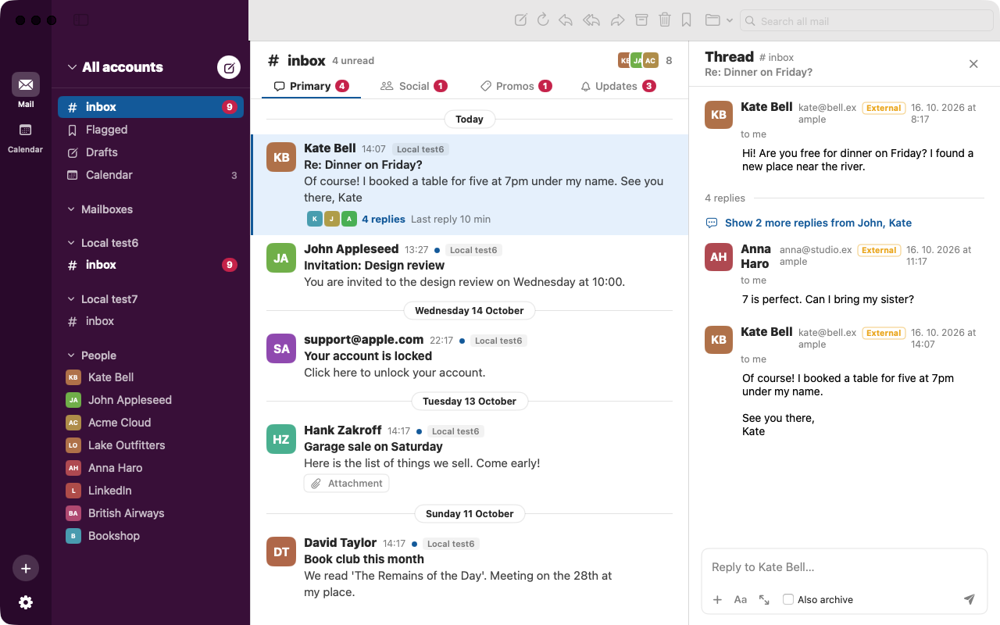

Instant inbox
IMAP IDLE delivers new mail the moment it arrives. A local SQLite store opens every folder at once, online or offline. Faster than a vibe coder saying “it works on my machine”.
Vibe-coded with love · reviewed by nobody · works anyway
juraClient is a native mail app with a built-in calendar. Folders work like channels, threads read like a conversation, and you can reply without leaving the inbox. Your mail stays on your computer. Our code stays in the chat history.
macOS 14+ (Apple Silicon) · Windows 10/11 (x64, ARM64)

# Folders as channels
↩ Quick reply in the thread
⏱ Undo Send, for regrets
⌘ Keyboard first, prompt second
Every feature below works. We know because we asked the model, and it said “Absolutely!”
IMAP IDLE delivers new mail the moment it arrives. A local SQLite store opens every folder at once, online or offline. Faster than a vibe coder saying “it works on my machine”.
People, social, promos and updates get their own tabs, so mail from real humans stays on top. Mail from AI agents goes where it belongs.
Sign-in codes get a copy button. Flight confirmations become a card with route, time and booking code. Your deploy keys still go in a .env file you'll commit by accident.
Take a message back after you press Send, or schedule it for the morning. Basically git revert for your social life.
FTS5 goes through every message you have in milliseconds. Unlike us going through the code the AI wrote last Tuesday.
Move, mark and archive mail automatically. Leave mailing lists without opening them. If only leaving a 400-message Slack thread were this easy.
Warnings for look-alike addresses, external senders and mail that fails authentication. The one part of the app nobody was allowed to vibe.
Type your address and juraClient finds the servers for you. No YAML. No Docker. No “just run these 14 commands”.
Get the gist of a long thread with your own API key. Off until you turn it on. Yes, the app built by AI is the one that asks before using AI.
Connect iCloud, Fastmail, Nextcloud, Radicale, Baïkal, Zoho or Yahoo. Day, week and month views, repeating events that keep their time when the clocks change, and invitations that go from your inbox straight into the calendar.
Time zones were the only bug the AI refused to touch. It said “this is above my pay grade” and we respected that.
T today DWM view ←→ move N new event
The mail engine is written once in Rust: sync, storage, MIME, SMTP and the calendar. On the Mac it runs under SwiftUI, on Windows under WinUI 3. Not Electron. We checked the prompt history to be sure.
Passwords live in the macOS Keychain or the Windows Credential Manager, never in plain files. Which is more than we can say for our own API keys.
Overheard in our team chat. Names changed to protect the prompt engineers.
Viktor
Shipped a new feature. No idea what it does, but the tests are green. I asked the AI to write the tests too.
Marta
My code review process: I ask the AI if the code is good. It says “Great question!” Approved. 🚀
Pavel
Senior vibe coder means I know which button says “Accept all”.
Lena
Wrote 40,000 lines this week. Read 12 of them.
😂 37💯 12Dan
Prompt: “fix the bug.” Result: three new bugs and a very confident commit message.
Olga
Git history in our repo: “fix”, “fix 2”, “actually fix”, “please work”, “ok the AI fixed it”.
Tomas
Rubber duck debugging is over. Now the duck writes the code and I nod.
Anna
Asked the model to add dark mode. It also added a blockchain. Keeping it, the vibes were right.
Jura
Fun fact: juraClient opens your inbox in under a second. Our developers open theirs at 3 a.m., after the context window runs out.
🫠 58Martin
Stack Overflow? Never heard of it. I just paste the error back in until it goes away.
Eva
The best part of vibe coding is the documentation. There isn't any, so it's always up to date.
Assistant
You're absolutely right! Let me rewrite the whole app…
Free. Version 67. That's 66 versions of “almost there”.
macOS 14 Sonoma or later, Apple Silicon. Installs into Applications. Intel Macs: we tried, the prompt timed out.
Download .pkgThe installer isn't notarized by Apple yet, so macOS blocks it the first time. That's expected:
Apple wants $99 a year to skip this step. We spent it on tokens.
Windows 10 (2004) or Windows 11. Installs for your user, no admin rights needed. Your IT department will never know.
Download for x64 Download for ARM64All versions and release notes are on the releases page. Release notes written by a human, mostly by copy and paste.